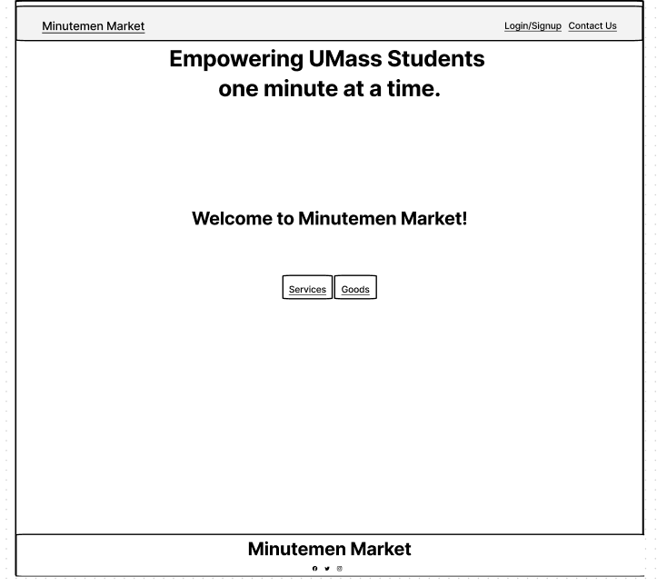
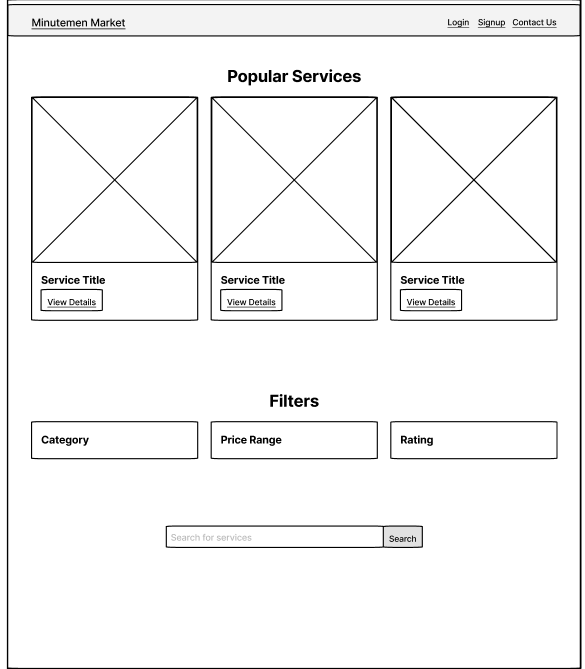
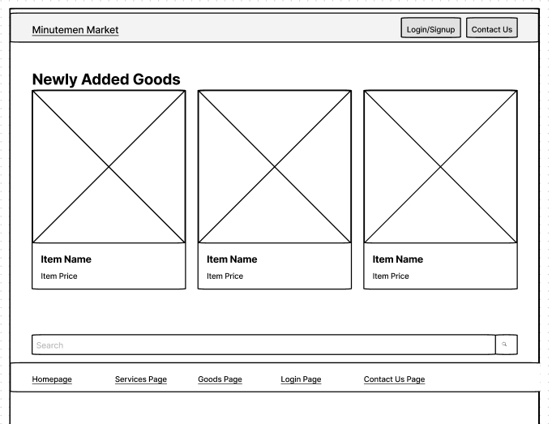
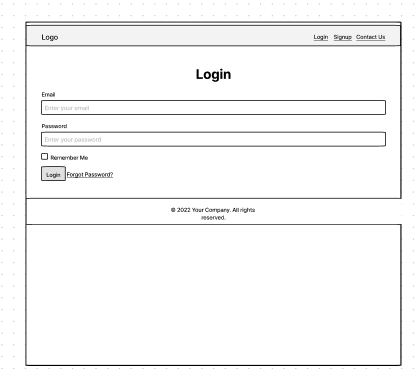
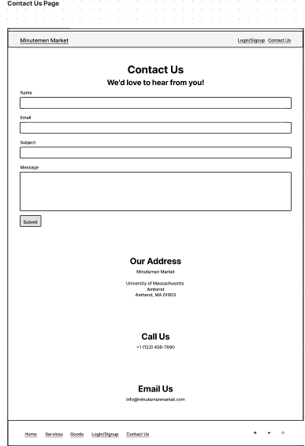

Overview
Application Parts
Validation System: One critical component of our application is the validation system, which ensures that only validated UMass students can connect with each other. This component is essential for maintaining the integrity and security of our platform, as it helps to prevent scams and fraudulent activities that are common on open-market platforms. By verifying the identity of users through stringent validation processes, we create a trusted environment where students can safely buy and sell goods and services without the fear of being deceived or cheated.
Marketplace Platform: Another crucial aspect of our application is the marketplace platform itself, which serves as the central hub for connecting buyers to sellers within the UMass community. This component facilitates the exchange of goods and services by providing a user-friendly interface where users can browse listings, make transactions, and communicate with each other. By streamlining the buying and selling process, our platform enhances convenience and efficiency for both parties involved, fostering a vibrant marketplace ecosystem within the university community.
Diverse Offerings: Our application also offers a wide range of options for both goods and services, catering to the diverse needs and interests of UMass students. In addition to traditional items such as textbooks and electronics, users can also find unique offerings like handmade crafts, artwork, and specialized services such as barbering or tutoring. This diversity enriches the user experience and encourages engagement within the community, as students have the opportunity to discover and support each other's talents and passions.
Reporting and Moderation System: To maintain a safe and respectful environment, our application features a robust reporting and moderation system. This component empowers users to report any illegal or inappropriate content they encounter, such as prohibited goods or services, ensuring that such content is promptly addressed by our moderation team. By enforcing community guidelines and taking swift action against violators, we uphold the integrity of our platform and prioritize the well-being of our users, fostering trust and accountability within the UMass community.
Data Requirements
Introduction: Our application serves as a marketplace specifically designed for the UMass community, enabling students to securely buy and sell goods and services within their campus network. In this discussion, we'll explore the primary categories of data that our application manages, highlighting their significance in facilitating efficient transactions and fostering a community atmosphere.
User Data: One fundamental type of data our application handles is user data. This includes information such as students' names, contact details, and academic affiliations. Managing this data securely allows users to create personalized profiles and ensures that only verified UMass students can access the marketplace. Safeguarding user privacy and integrity is crucial as it builds trust among users and ensures the reliability of our platform.
Listing Data: Another essential component of our application's data ecosystem is listing data. This category comprises details about the goods and services available for sale within the marketplace, including item descriptions, prices, and seller information. Effective management of listing data enables users to browse through offerings and make informed purchasing decisions. Additionally, it facilitates smooth transactions by providing clear and accurate information to both buyers and sellers.
Transaction Data: Transaction data plays a critical role in documenting the exchange of goods and services within our marketplace. This includes purchase histories, payment details, and transaction statuses. By recording transaction data, we provide users with a comprehensive overview of their activities, enabling them to track orders and manage payments. Moreover, transaction data serves as a valuable source of insights for optimizing the user experience and identifying trends within the marketplace.
Moderation Data: The final type of data our application handles is moderation data, which encompasses information related to content moderation and user behavior. This includes reports of inappropriate or fraudulent activity and actions taken by moderators to address such incidents. Effective management of moderation data is essential for maintaining a safe environment within the marketplace and protecting users from scams. By implementing robust moderation systems, we uphold the integrity of our platform and cultivate a community atmosphere based on trust and accountability.
Conclusion: In conclusion, the efficient handling of various types of data forms the backbone of our marketplace application for the UMass community. From user data to moderation data, each category plays a distinct yet interconnected role in facilitating transactions and fostering a community atmosphere. By prioritizing the security and reliability of our data management systems, we aim to create an inclusive platform where students can confidently engage in buying and selling activities within their campus network.
Wireframes
Home Page
Services Page
Goods Page
Login Page
Contact Page
Real-world Integration
The Minuteman Market emerges as a pioneering solution, specifically designed to confront the pressing challenges of waste and inefficiency in the utilization of resources. Positioned within the vibrant ecosystem of a university, this platform is particularly attuned to the needs and constraints of college students, especially those managing tight budgets. By offering goods and services at reduced rates, or even through barter exchanges, Minuteman Market opens up new avenues for students to access essential items and services without straining their financial resources. In the university context, where students are constantly navigating the complexities of managing their finances while ensuring they have the necessary materials and support for their studies, Minuteman Market stands as a vital resource. It not only facilitates a more affordable way for students to obtain textbooks, furniture, electronic gadgets, and tutoring services but also encourages a culture of recycling and reusing, significantly reducing waste and promoting environmental sustainability. Moreover, the platform acts as a community builder, fostering connections among students from diverse backgrounds. Through the process of exchanging goods and services, students not only help each other meet their material needs but also engage in a form of social exchange, sharing knowledge, skills, and experiences. This communal aspect of Minuteman Market enhances the university experience by creating a support network where students learn the value of cooperation and mutual aid.
Integrative Experience
The Minuteman Market project embodies the Integrative Experience (IE) by combining diverse academic disciplines and personal growth milestones into a solution targeting waste reduction, affordability, and community engagement among university students. This initiative merges technical skills from computer science, business, environmental sustainability insights, and sociological understanding to create a platform that facilitates the exchange of goods and services, particularly benefiting students with limited financial resources. Drawing from computer science courses, the team has developed a robust platform that is both user-friendly and efficient. Business studies have contributed to the project's strategic planning and sustainability model, ensuring its long-term sustainability. Insights from environmental studies have underscored the importance of reducing waste through reuse and recycling, which is at the core of Minuteman Market's mission. Sociology courses have informed the platform's community-building features, ensuring it remains inclusive and accessible to all students. Moreover, the project is steeped in personal growth experiences, reflecting the team's journey through university life, where balancing academics, part-time work, and extracurricular activities has honed skills in time management, problem-solving, and collaboration. These experiences have not only enriched the team's academic learning but have also provided valuable life lessons in resilience and community support.